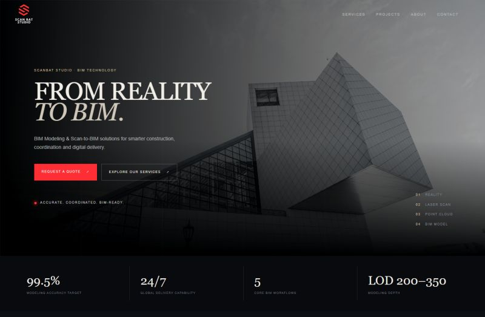

PORTFOLIO / ÉTUDE DE CAS
ScanBat Studio
Fier d’avoir contribué, comme développeur web, à la présence digitale d’un studio spécialisé en solutions BIM pour l’architecture, la construction et la rénovation.

REACT · NODE.JS · UI/UX
À propos du projet
ScanBat Studio propose des services BIM adaptés aux projets d’architecture, de construction et de rénovation. Le site présente clairement l’expertise de l’équipe et facilite la découverte de ses solutions.
RôleDéveloppeur web
TechnologiesReact, Node.js
TravailIntégration, responsive, performances
APERÇU
Le projet
Développement et intégration d’un site web responsive, avec une attention portée à l’expérience utilisateur, aux performances et à la valorisation de l’identité digitale de ScanBat Studio.
- Développement et intégration du site web
- Conception responsive pour tous les écrans
- Travail sur l’interface utilisateur et l’expérience utilisateur
- Optimisation des performances
- Mise en valeur de l’identité digitale et des services